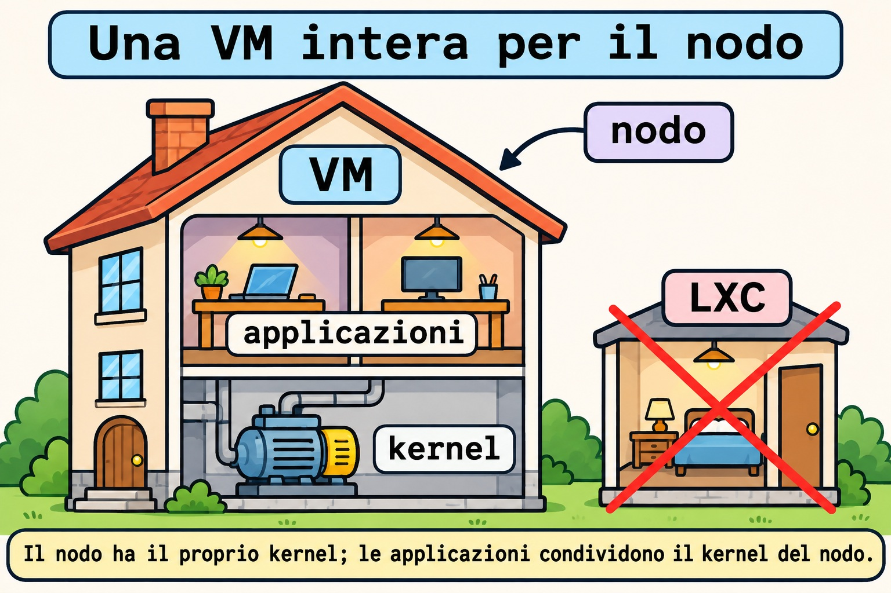
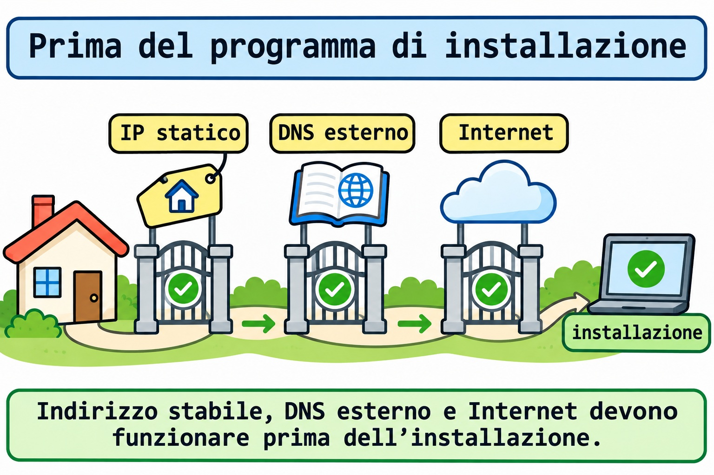
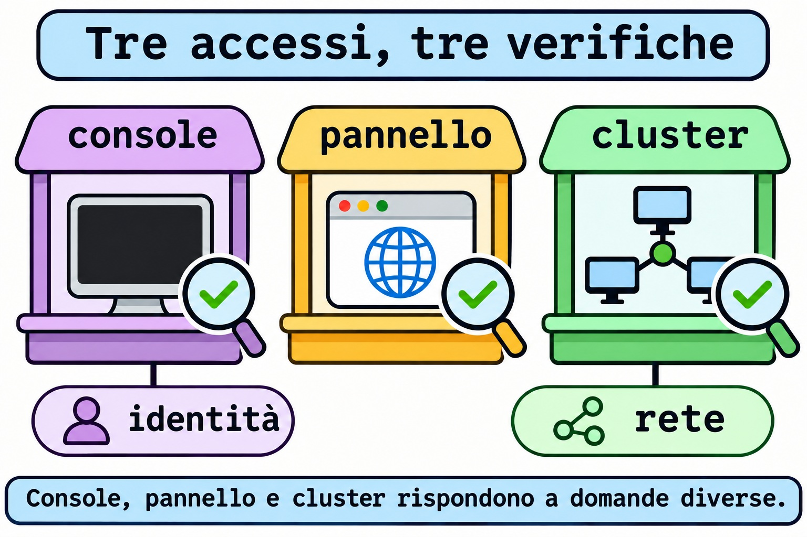

Lezione 20.1 · Installare in una VM pulita
Il cuore di questa lezione: creare la VM 240, preparare i prerequisiti e aprire un cluster NS8 identificato.
| Scheda | Piano di lavoro |
|---|---|
| Modulo | M20 · Dentro NethServer 8, lezione 1 di 7 |
| Quando | Settimana 27 |
| Alla fine | creare la VM 240, preparare i prerequisiti e aprire un cluster NS8 identificato. |
| Prerequisiti | M18 e M19 corretti; inventario e accesso alla console autorizzati |
| Durata | 150–180 minuti, oltre ai download |
| Snapshot | m20a1-inicio e m20a1-fim; solo VM 240 |
La VM 240, ns8-1, sarà il primo nodo; la VM 241, ns8-2, entra soltanto nella 20.7. Nome della VM, hostname, ID del nodo e ID dell’applicazione sono campi diversi.
I comandi Proxmox sono indicati come HOST. I comandi NS8 usano Bash come root nella VM, dopo sudo -i; non sono comandi per l’host di virtualizzazione.
Usa la Guida del laboratorio M20. L’indirizzo isolato della 240 è 192.0.2.240; la gestione ha un indirizzo reale riservato e accesso a Internet.
Non eseguire il blocco successivo se una guardia fallisce. Gli output attesi qui sotto non dichiarano un laboratorio già eseguito.
1 · Riscaldamento
- Il kernel di un LXC appartiene al container o all’host?
- Un indirizzo ricevuto tramite DHCP è una configurazione statica del nodo?
- Il DNS del nodo può dipendere da un’applicazione che parte solo dopo NS8 stesso?
2 · Perché conta
NS8 usa un sistema Linux per coordinare applicazioni in container. Installarlo su un server già occupato mescola le dipendenze e rende difficile attribuire la causa di un guasto.
Qui la VM è nuova. I servizi del M19 restano sulla 204, senza convertire quella macchina in un nodo NS8.
Ponte Windows
Pensa alla VM come a un server completo con il proprio sistema operativo. Il pannello NS8 amministra ciò che gira al suo interno; non sostituisce la console di recupero né l’inventario dell’hypervisor.
3 · Modello mentale


La VM 240 possiede un kernel proprio; NS8 e le sue applicazioni usano quel kernel. Installare NS8 in Proxmox LXC non è una distribuzione supportata.
Un solo nodo forma già un cluster funzionante. La parola cluster descrive qui il piano di controllo, non una promessa automatica di alta disponibilità.
4 · L'essenziale
| Voce | Contratto del laboratorio |
|---|---|
| VM 240 | ns8-1; Rocky Linux 9 pulito; 4 vCPU; 8 GiB RAM; disco 80 GiB |
| Macchina | q35; OVMF; VirtIO; CPU x86-64-v2-AES; vm-hdd |
| net0 | vmbr0; gestione con IP reale statico e gateway |
| net1 | vmbr17; 192.0.2.240/24; senza gateway |
| DNS | esterno a NS8, raggiungibile su 192.0.2.204 |
| FQDN | ns8-1.lab.test; non è un nome pubblico per ACME |
Rocky × Debian
Il modulo usa Rocky Linux 9 su entrambi i nodi. La documentazione contempla anche Debian 13, ma non mescoleremo famiglie in un cluster di studio permanente.
Lo storage del nodo deve essere locale al filesystem XFS o ext4, sul disco virtuale. Non collocare la home dei moduli su NFS.
Decidi 1
La VM 240 esiste già. Qual è l’azione successiva?
A. Eliminare la VM perché il nome del lab è noto.
B. Fermarti e riconciliare l’inventario prima di creare o modificare.
C. Creare un CT con lo stesso ID.
5 · Lab guidato
Prepara una scheda prima di aprire il programma di installazione: operatore, nodo Proxmox, VMID, storage, ISO, indirizzo di gestione e finestra di lavoro. Ogni dato mancante è una dipendenza da risolvere.
Il blocco di creazione non sceglie un altro ID in caso di conflitto. Un numero libero in un elenco locale non permette di ignorare l’inventario globale.
Il bridge isolato esiste soltanto sui nodi in cui è stato preparato. Le VM 204, 240 e, in seguito, 241 richiedono lo stesso segmento effettivo indicato dalla guida.
Passo 1 · Riservare e creare soltanto la VM nuova
Ipotesi: L’ID libero sul nodo attuale è libero anche nell’intero cluster?
HOST Proxmox autorizzato: controlla l’inventario globale e il nodo scelto. Usa la ISO Rocky 9 ufficiale già autenticata nel corso; non inventare nome del volume né checksum.
pvesh get /cluster/resources --type vm --output-format json-pretty || exit 1
test "$(pvesh get /cluster/nextid --vmid 240)" = 240 || exit 1
read -r -p 'Rocky 9 ISO volume: ' ISO_VOLUME
ISO_PATH=$(pvesm path "$ISO_VOLUME") || exit 1
test -f "$ISO_PATH" || exit 1
read -r -p 'Authenticated ISO SHA256: ' ISO_SHA256
[[ "$ISO_SHA256" =~ ^[0-9a-fA-F]{64}$ ]] || exit 1
printf '%s %s
' "$ISO_SHA256" "$ISO_PATH" | sha256sum -c - || exit 1
test ! -e /root/m20-operador.env || exit 1
umask 077
printf 'ISO_VOLUME=%q\nISO_SHA256=%q\n' "$ISO_VOLUME" "$ISO_SHA256" > /root/m20-operador.env
chmod 0600 /root/m20-operador.env
qm create 240 --name ns8-1 --machine q35 --bios ovmf --cpu x86-64-v2-AES --cores 4 --memory 8192 --ostype l26 --scsihw virtio-scsi-single --scsi0 vm-hdd:80 --efidisk0 vm-hdd:1,efitype=4m,pre-enrolled-keys=1 --net0 virtio,bridge=vmbr0 --net1 virtio,bridge=vmbr17,link_down=1 --ide2 "$ISO_VOLUME,media=cdrom" --boot 'order=ide2;scsi0' || exit 1
qm config 240
qm start 240 || exit 1Output atteso: Viene creata solo la nuova 240, con due schede; la seconda inizia scollegata.
Verifica: Registra configurazione, storage e MAC. Se l’ID è occupato o la ISO non corrisponde, non aggirare la guardia.
L’output di creazione della VM è un riscontro dell’infrastruttura, non dell’installazione del sistema operativo. Conserva lo stato prima di entrare nella console del guest.
Se la creazione termina parzialmente, fermati. Non eseguire di nuovo lo stesso comando né eliminare volumi senza confrontare la configurazione con il registro del tentativo.
Il nome del volume ISO è un riferimento Proxmox. Il percorso ottenuto con pvesm appartiene all’host; quel percorso non va usato dentro la VM.
Passo 2 · Installare il sistema e preparare la rete
Ipotesi: Cambiare l’etichetta in Proxmox configura anche hostname e DNS del guest?
Nella console della 240 installa Rocky 9 minimal, senza servizi aggiuntivi. Imposta hostname ns8-1.lab.test, utente student nel gruppo amministrativo e password root di emergenza conservata fuori dalla lezione.
Configura net0 con indirizzo reale riservato, maschera e gateway dell’inventario. Includi 4 GiB di swap nel piano di partizionamento già studiato, senza sovrascrivere dischi esistenti.
Prima del programma di installazione NS8 esegui la guida M20: controlla DNS, associa net1 tramite MAC, applica .240 e attiva solo quella scheda. La rotta predefinita deve restare su net0.
sudo -i
test "$(id -u)" -eq 0 || exit 1
test "$(hostname -s)" = ns8-1 || exit 1
. /etc/os-release
test "$ID" = rocky || exit 1
case "$VERSION_ID" in 9|9.*) ;; *) exit 1 ;; esac
hostnamectl hostname
ip -br -4 address
ip -4 route
cat /etc/resolv.conf
getent ahostsv4 ns8-1.lab.test
swapon --show
lsblk -o NAME,SIZE,TYPE,FSTYPE,MOUNTPOINTS
findmnt -T /home
df -h / /home
timedatectl status
case "$(systemd-detect-virt)" in kvm|qemu) ;; *) exit 1 ;; esac
getenforceOutput atteso: Rocky 9 pulito, FQDN risolto su .240, DNS esterno, swap e disco identificati.
Verifica: Non usare loopback o il nodo stesso come DNS. La 204 fornisce risoluzione esterna a NS8 e raggiunge Internet dalla propria gestione.
Mantieni aperta la console autorizzata mentre applichi la rete. Se perdi la gestione, usa quella console per confrontare profilo, MAC, indirizzo e rotta; non disabilitare l’intero firewall.
Conferma che il resolver esterno risponda per nomi pubblici e per i nomi privati del laboratorio. Risolvere soltanto il nome del nodo non dimostra accesso ai repository.
La scheda isolata non offre un gateway. Se compare una seconda rotta predefinita, correggi il profilo prima dell’installazione, anziché dipendere da una metrica scelta per caso.
L’orologio deve essere sincronizzato per valutare certificati e correlare registri. Una data errata non si corregge accettando qualsiasi certificato.
Sul HOST Proxmox, dopo la preparazione del sistema pulito e prima dello script NS8, crea lo snapshot iniziale:
test "$(qm config 240 | sed -n 's/^name: //p')" = ns8-1 || exit 1
qm set 240 --boot 'order=scsi0;ide2' || exit 1
qm snapshot 240 m20a1-inicio || exit 1Torna alla VM 240 e alla sessione root per il prossimo passo. Il diario ISO /root/m20-operador.env resta sul host, mentre /root/m20-lab/operador.env sarà creato nella VM dopo la configurazione del cluster.
Passo 3 · Registrare l’origine del programma di installazione
Ipotesi: Uno SHA256 calcolato dopo il download autentica da solo l’origine?


test "$(id -u)" -eq 0 || exit 1
test ! -e /root/m20-lab || exit 1
install -d -m 0700 /root/m20-lab
dnf install -y curl less openssl || exit 1
curl --fail --show-error --location --proto '=https' --tlsv1.2 https://raw.githubusercontent.com/NethServer/ns8-core/ns8-stable/core/install.sh --output /root/m20-lab/install.sh || exit 1
test -s /root/m20-lab/install.sh || exit 1
bash -n /root/m20-lab/install.sh || exit 1
less /root/m20-lab/install.sh
sha256sum /root/m20-lab/install.sh > /root/m20-lab/install.sh.sha256
chmod 0600 /root/m20-lab/install.sh /root/m20-lab/install.sh.sha256Confronta l’URL con la documentazione ufficiale. Leggi il file e registra la data; l’hash locale identifica i byte ricevuti, senza costituire una firma indipendente.
Output atteso: File disponibile per la lettura, sintassi Bash accettata e hash registrato. Il programma di installazione non è ancora stato eseguito.
Verifica: Se il file contiene HTML, è vuoto o l’origine è diversa, fermati. Non eseguire una risposta d’errore come Bash.
Il controllo di sintassi accetta la grammatica del file; non esamina tutte le azioni che lo script eseguirà. Leggi contenuto e documentazione prima di autorizzare l’esecuzione.
Il nome ns8-stable identifica il ramo stabile, ma il suo contenuto può cambiare. Hash e data permettono di identificare quale file è stato usato in questa prova.
Non pubblicare il log integrale senza revisione: i messaggi possono rivelare indirizzi, credenziali temporanee o informazioni interne. Copia nel diario soltanto il necessario.
Passo 4 · Installare e riavviare soltanto il guest
Ipotesi: Un output lungo dimostra che l’installazione è terminata correttamente?
test "$(hostname -s)" = ns8-1 || exit 1
test "$(id -u)" -eq 0 || exit 1
sha256sum -c /root/m20-lab/install.sh.sha256 || exit 1
date --iso-8601=seconds
bash /root/m20-lab/install.sh || exit 1
date --iso-8601=seconds
command -v runagent || exit 1
systemctl rebootIl programma ufficiale aggiorna anche pacchetti del sistema. Non chiudere la console, non eseguire un’altra installazione in parallelo e non ripetere lo script su un’esecuzione incompleta senza indagare.
Dopo il reboot accedi come student, usa sudo -i e controlla di nuovo hostname e indirizzi prima di continuare.
Output atteso: Installazione completata senza errori e VM riavviata; l’host Proxmox resta acceso.
Verifica: Leggi i guasti reali di download, spazio o risoluzione prima di modificare qualsiasi servizio. SELinux e firewalld restano attivi.
Al ritorno, conferma che il disco virtuale sia la prima opzione di boot. Tieni la ISO fuori dal percorso di avvio normale dopo l’installazione.
Usa la procedura di boot Proxmox soltanto sull’host autorizzato e sull’ID 240; nessuno di quei comandi appartiene alla sessione root del guest.
Un’installazione interrotta da un guasto DNS può lasciare alcuni componenti presenti. Questo non autorizza a trattare la macchina come un cluster già creato.
La console e la gestione devono restare disponibili anche se il browser non apre il pannello. Distingui indisponibilità di rete, di processo e di fiducia TLS.
Passo 5 · Aprire il pannello con identità verificata
Ipotesi: Il primo avviso TLS del browser dimostra che hai raggiunto la VM prevista?


test "$(id -u)" -eq 0 || exit 1
test "$(hostname -s)" = ns8-1 || exit 1
runagent -l
ss -ltnp '( sport = :443 )'
openssl s_client -connect 127.0.0.1:443 -servername ns8-1.lab.test -showcerts < /dev/null 2>/dev/null | openssl x509 -noout -subject -issuer -dates -fingerprint -sha256Sul client 202 conferma tramite la guida che il nome punti a .240. Apri https://ns8-1.lab.test/cluster-admin/. Il certificato iniziale può essere autofirmato.
Usa l’impronta ottenuta nella console autorizzata come canale indipendente per controllare il certificato mostrato dal browser. Solo in questo laboratorio e per questo host completa l’accesso iniziale dopo il confronto; se non corrisponde, fermati.
La 20.4 sostituirà questo accesso iniziale con fiducia TLS esplicita. Non usare curl -k, non rendere il browser globalmente permissivo e non inviare credenziali via HTTP.
Accedi con l’utente admin e la credenziale iniziale pubblicata nella pagina ufficiale d’installazione della versione usata. Cambiala subito con una password esclusiva e conservala fuori dal diario.
Output atteso: Pannello della VM prevista, impronta verificata e password iniziale sostituita.
Verifica: Esci e accedi di nuovo con la password nuova. Distingui l’account amministrativo del pannello dall’utente Unix usato per SSH.
La guida fornisce l’accesso del browser Windows tramite inoltro SSH attraverso il client 202. Il FQDN resta nell’URL e nello SNI; la porta locale non cambia l’identità del server.
Le voci locali di Windows fanno parte soltanto di quel percorso d’accesso. Sui nodi NS8, la risoluzione continua a usare DNS reale esterno a NS8 stesso.
Se il tunnel non è attivo, non sostituire l’URL con l’IP di un’altra macchina per far apparire la schermata. Ricontrolla l’inoltro e il bersaglio remoto.
Prima di chiudere il primo accesso, conferma che la nuova password funzioni in un’altra sessione del browser. Mantieni un accesso amministrativo di recupero senza esporre la password nel materiale.
Passo 6 · Creare il cluster e chiudere l’inventario
Ipotesi: Una VPN scelta senza controllare le rotte si corregge poi con un semplice alias?
Nel pannello scegli Create cluster. Conferma FQDN ns8-1.lab.test. Confronta il CIDR proposto per la VPN con tutte le reti reali, VPN, container e 192.0.2.0/24; accetta soltanto un blocco senza sovrapposizioni.
Registra la scelta: il CIDR iniziale non è un campo modificabile liberamente in seguito. Non copiare un CIDR da un output illustrativo.
test ! -e /root/m20-lab/operador.env || exit 1
NS8_IP=192.0.2.240
NS8_FQDN=ns8-1.lab.test
WIKI_FQDN=wiki.lab.test
NODE_ID=$(redis-cli --raw HGET cluster/environment NODE_ID) || exit 1
[[ "$NODE_ID" =~ ^[1-9][0-9]*$ ]] || exit 1
VPN_CIDR=$(redis-cli --raw GET cluster/network) || exit 1
test -n "$VPN_CIDR" || exit 1
umask 077
printf 'NS8_IP=%q
NS8_FQDN=%q
WIKI_FQDN=%q
NODE_ID=%q
VPN_CIDR=%q
' "$NS8_IP" "$NS8_FQDN" "$WIKI_FQDN" "$NODE_ID" "$VPN_CIDR" > /root/m20-lab/operador.env
chmod 0600 /root/m20-lab/operador.env
redis-cli PING
redis-cli ROLE
systemctl --failed --no-pagerOutput atteso: Cluster iniziale con la 240 come leader, ID reale e inventario senza credenziali.
Verifica: Confronta NODE_ID e VPN nel pannello; conserva il file per la 20.2. La VM 241 non è ancora stata creata.
Decidi 2
La rete è corretta, ma il certificato presentato è diverso da quello della console. Che cosa fai?
A. Fermarti e indagare nome, rotta e certificato prima del login.
B. Disattivare globalmente la verifica TLS.
C. Accettare perché l’indirizzo sembra noto.
Sull’HOST, dopo aver completato la configurazione e confermato l’identità, registra lo stato finale della VM. Lo snapshot iniziale della prova va creato con il sistema pulito prima di eseguire il programma di installazione; quello finale conserva il cluster creato.
Non ripristinare uno snapshot vecchio dopo che applicazioni o altri nodi dipendono da esso. La regressione della configurazione può essere più ampia del problema che vuoi annullare.
Sul HOST, dopo le verifiche del cluster e prima dei guasti, registra il checkpoint finale:
test "$(qm config 240 | sed -n 's/^name: //p')" = ns8-1 || exit 1
qm snapshot 240 m20a1-fim || exit 1I guasti seguenti appartengono al client o a una copia di prova, non al host Proxmox.
6 · Rompi e ripara
Guasto 1 · Nome che punta a un’altra macchina
Sintomo: Sul client di test una voce locale di prova per il FQDN punta all’IP sbagliato.
Indagine: Confronta la query esplicita al DNS con la risoluzione del sistema e il certificato della console.
Causa: La risposta del file locale può precedere il DNS; la VM corretta continua a funzionare.
Riparazione: Rimuovi soltanto la voce marcata della prova, conservando backup e altre voci.
Prevenzione: Non creare il guasto nel DNS usato dai nodi; eseguilo soltanto sul client di test.
Verifica: Il client torna a risolvere .240 e l’impronta coincide con la console.
Guasto 2 · Programma di installazione che non è Bash
Sintomo: Una copia locale di prova contiene una risposta d’errore al posto dello script.
Indagine: Crea solo la copia di prova con una riga incompleta e usa bash -n; non eseguire la copia.
test "$(id -u)" -eq 0 || exit 1
test "$(hostname -s)" = ns8-1 || exit 1
M20_BROKEN=$(mktemp /root/m20-lab/install-broken.XXXXXX.sh) || exit 1
printf '%s\n' 'if then' > "$M20_BROKEN"
if bash -n "$M20_BROKEN"; then exit 1; fi
rm -- "$M20_BROKEN"
sha256sum -c /root/m20-lab/install.sh.sha256 || exit 1Causa: Scaricare un file non significa ricevere il contenuto previsto.
Riparazione: Elimina soltanto la copia creata per il guasto; riconvalida file originale e hash.
Prevenzione: Separa download, ispezione ed esecuzione; non unire tutto in una riga cieca.
Verifica: L’originale supera il controllo e la copia non valida è stata rifiutata senza esecuzione.
Guasto 3 · Confondere sessione e identità
Sintomo: Un terminale amministrativo si trova sull’host Proxmox, non nella VM 240.
Indagine: Usa hostname, virtualizzazione e indirizzo prima di qualsiasi installazione. Non eseguire lo script sull’host per provare.
Causa: Il permesso root non identifica il bersaglio corretto.
Riparazione: Chiudi il terminale sbagliato e torna alla console o SSH autorizzato della VM.
Prevenzione: Scrivi il bersaglio nel diario e mantieni guardie esplicite prima dell’installazione.
Verifica: L’hostname è ns8-1, l’indirizzo isolato è .240 e il contesto è la VM prevista.
7 · Trappole
Non concludere dall’icona verde di una schermata. Confronta identità, attività completata e risposta funzionale lungo il percorso usato dal client.
Lo snapshot dell’intera VM aiuta a tornare indietro da una prova locale, ma non sostituisce il backup dell’applicazione e della configurazione del cluster.
Una password o un token non appartiene al diario pubblicato. Registra nomi, orari e risultati; conserva i segreti separatamente.
Una VM spenta e un’applicazione ferma sono guasti di livelli diversi. Conserva una sequenza temporale per non mescolare ciò che hai osservato prima e dopo il reboot.
Non esporre un endpoint a Internet soltanto per ottenere un certificato pubblico in questo laboratorio. La 20.4 usa fiducia privata e separa l’emissione pubblica condizionale.
Se la risoluzione pubblica funziona ma quella privata no, esamina la zona e il percorso verso la 204. Se falliscono entrambe, inizia da scheda, rotta e accesso al resolver.
Un indirizzo DNS corretto non riserva memoria o disco. Controlla nuovamente le risorse prima di installare applicazioni che conservano dati.
8 · Quiz
- Perché LXC non soddisfa questo percorso?
- Qual è il limite di un checksum calcolato localmente?
- Perché il DNS del nodo deve essere esterno a NS8?
- Quale verifica distingue il primo accesso TLS da un’accettazione cieca?
- Che cosa va verificato prima di scegliere la VPN del cluster?
9 · Promemoria
hostnamectl hostname
ip -br -4 address
ip -4 route
cat /etc/resolv.conf
getenforce
runagent -lFlashcard: Nodo NS8 → sistema pulito, identità e rete prevedibili.
Flashcard: Checksum locale → registrazione del file ricevuto, senza autenticare da solo l’origine.
10 · Checklist e chiusura
- [ ] VM 240 nuova e separata da servizi precedenti.
- [ ] DNS, rotta predefinita, IP statico e FQDN controllati.
- [ ] Origine, contenuto e hash del programma registrati.
- [ ] Password iniziale sostituita e verifica TLS del primo accesso conservata.
- [ ] CIDR della VPN e ID reale registrati senza segreti.
Reboot di verifica: Nella finestra concordata, riavvia soltanto la VM 240 e riconnettiti dalla gestione. Non riavviare l’host Proxmox.
systemctl rebootDopo il ritorno, usa nuovamente la sessione root nella VM corretta e ripeti la verifica:
test "$(id -u)" -eq 0 || exit 1
test "$(hostname -s)" = ns8-1 || exit 1
ip -br -4 address
ip -4 route
getent ahostsv4 ns8-1.lab.test
runagent -l
systemctl --failed --no-pagerApri di nuovo il pannello per nome, controlla il nodo e verifica l’applicazione se è già installata. Un servizio avviato non dimostra identità TLS né contenuto corretto.
Ultimo esercizio: Chiudi la sessione del pannello, accedi di nuovo e mostra quale riscontro collega l’URL alla VM 240.
11 · Nella vita reale
In un ambiente reale, ottieni inventario e referente prima di qualsiasi modifica. In questa missione leggi soltanto versioni, risoluzione dei nomi e stato; non installare, fermare o rimuovere applicazioni.
Registra tre riscontri senza credenziali e una domanda che richiede ancora conferma. Il limite di ciò che sai fa parte della diagnosi.
12 · Approfondire quando vuoi
NS8: database di configurazione
Usa la documentazione della versione installata e registra quando è stata consultata. Le etichette del pannello possono cambiare; la verifica tecnica resta l’identità e il comportamento osservati.
!explica
!feynman
!quizUsa i tre prompt per spiegare il percorso, insegnarlo con parole tue e verificare le decisioni. Non incollare password, token o contenuti privati.
Soluzioni commentate
Riscaldamento: LXC condivide il kernel dell’host; un lease non sostituisce la configurazione statica; una dipendenza DNS circolare può impedire l’avvio stesso.
Decidi 1: B. L’inventario globale precede l’uso dell’ID, anche se l’occupante è un CT.
Decidi 2: A. Il certificato diverso impedisce di attribuire la connessione al nodo previsto.
Quiz 1: la distribuzione NS8 in LXC non è supportata; questo laboratorio richiede una VM con kernel proprio.
Quiz 2: l’hash identifica i byte ricevuti; senza un riferimento autenticato non dimostra chi li ha pubblicati.
Quiz 3: il resolver del nodo non può dipendere da un’applicazione ospitata sul nodo, né da un loopback che i container interpreterebbero localmente.
Quiz 4: controllare l’impronta tramite console indipendente prima di usare credenziali; la fiducia normale verrà installata nella 20.4.
Quiz 5: assenza di sovrapposizioni con reti fisiche, VPN, container e rete isolata, oltre alla capacità futura.
← Lezione 19.9 · Proxy e sfida · Indice delle lezioni · Piano del corso